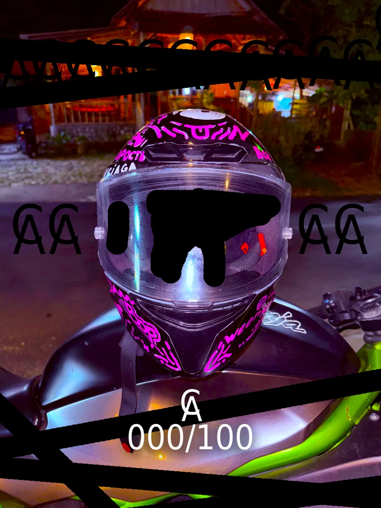
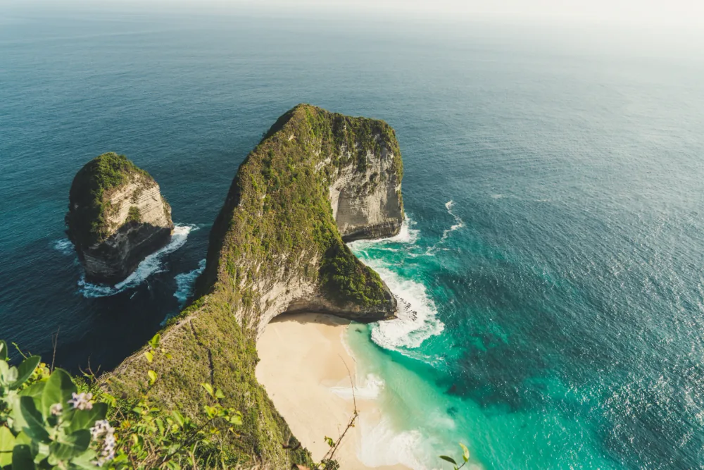

The world within
Space, numbers and things that are
more complex than they seem. Let’s figure them out.
From the infinity of space
to a road with no plan.
Explore. Capture. Create.
Sometimes I want to understand.
Sometimes, just hit the road.
Space, numbers and things that are
more complex than they seem. Let’s figure them out.
Roads, islands, unexpected encounters.
My life beyond the edit.
Andry Wednesday
Another side of me.
Listen wherever you feel at home.
Some ideas ask for more than words.
They ask to be made.

ART / OBJECTSA story about freedom of style.
Told through helmets.
Room for your goals.
The app link will be here soon.

TRAVEL / BALIAn island that became
more than a place on the map.
One person may follow more than one account.
Sum of available YouTube view counters.
From daily public snapshots.
From daily public snapshots.
Public pages only. Coverage is shown under every total; unavailable counters are never treated as zero. The ≈ sign means a platform rounds its follower count.
Growth over 7 and 365 days is the difference between two public counter snapshots, not a private analytics report. A dash appears until the baseline exists. Growth is withheld when a counter decreases due to removals or corrections.
If a source is unavailable, its last successful dated snapshot remains. Values older than two days are excluded from totals. Music streams and likes are not mixed with video views.